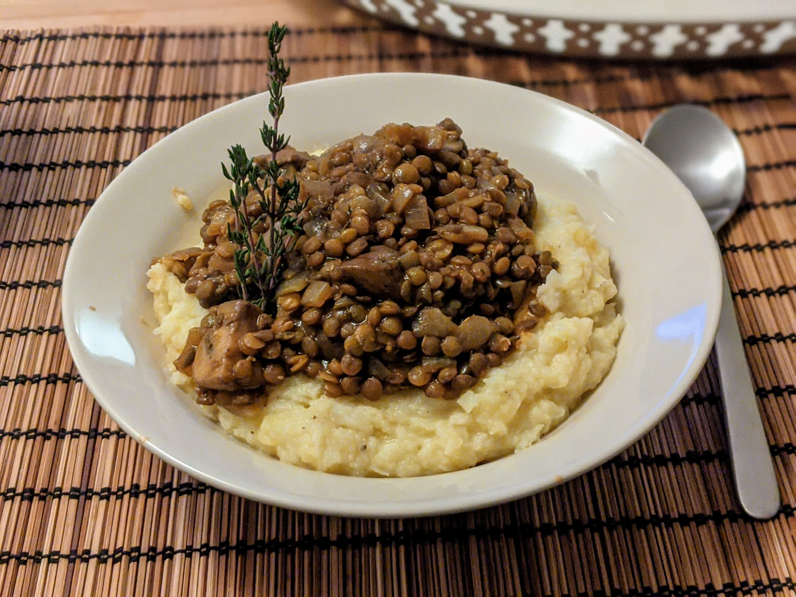

Ragoût de lentilles aux champignons

Ici avec une purée de panais
Pour 3-4 personnes :
- 200g de lentilles brunes
- Un bon demi-litre de bouillon de légumes
- 400g de champignons standard
- 400g de shiitake
- 50g de concentré de tomates
- Un gros oignon
- 3 gousses d'ail
- Un verre de vin rouge
- Quelques branches de thym
- Une feuille de laurier
- Une cuillère à soupe de romarin frais
- Deux cuillères à soupe de de farine
- 40g de beurre
- 30mL de sauce soja
- Sel, poivre, huile d'olive
- Faire cuire les lentilles dans le bouillon de légumes avec le laurier et le thym. En fonction des lentilles, ça prend entre une demi-heure et une heure. C'est une bonne idée de faire tremper les lentilles une nuit avant, mais c'est pas obligé.
- Pendant ce temps, laver et couper les champignons en gros morceaux, et éplucher et émincer les oignons. Faire revenir le tout dans une grosse casserole avec de l'huile d'olive.
- Éplucher et écraser l'ail, l'ajouter dans la casserole avec le concentré de tomates. Mélanger jusqu'à ce tout devienne bien rouge, saler, poivrer, puis ajouter le vin et le romarin. Faire cuire doucement jusqu'à ce que le vin réduise environ à moitié.
- Lorsque les lentilles sont cuites, les égoutter en gardant le jus de cuisson, et les rajouter dans la casserole.
- Faire fondre le beurre au fond d'une autre casserole, puis ajouter la farine et mélanger. Quand ce mélange pâteux (ça s'appelle un roux) commence à roussir, ajouter la sauce soja, puis le jus de cuisson des lentilles progressivement pour que ça fasse un mélange bien crémeux.
- Ajouter le tout dans la casserole avec les champignons et les lentilles, faire mijoter à feu moyen-doux quelques minutes pour que le tout soit bien crémeux.
- Déguster chaud, avec une purée, par exemple de panais.